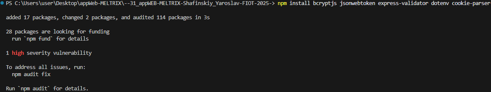
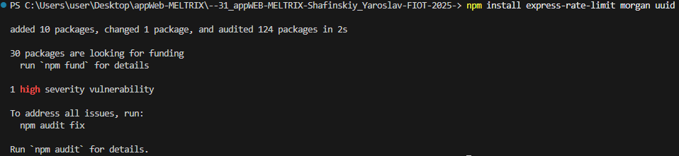
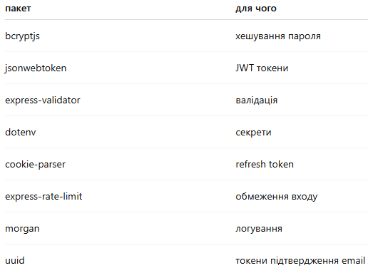
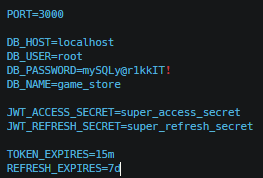
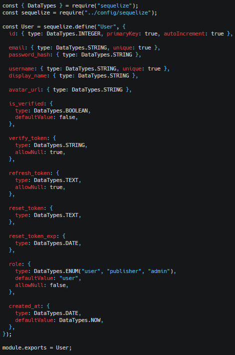
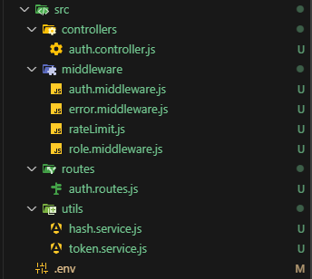
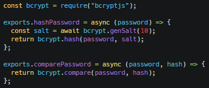
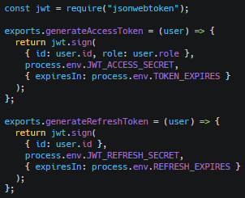

Зображення



Додаємо змінні середовища
.env
Зображення

Оновлюємо модель USER(додаємо поля для auth(verify_token, refresh_token, reset_token))
Зображення

Структура AUTH модуля
Зображення

Сервіс хешування паролів
utils/hash.service.js
Зображення

Сервіс JWT токенів
utils/token.service.js
Зображення
